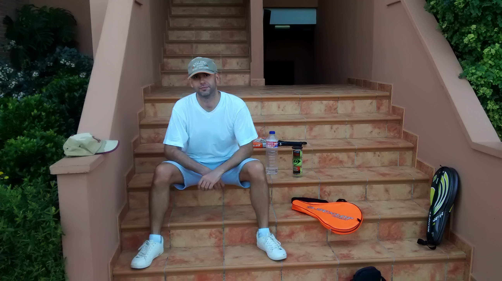
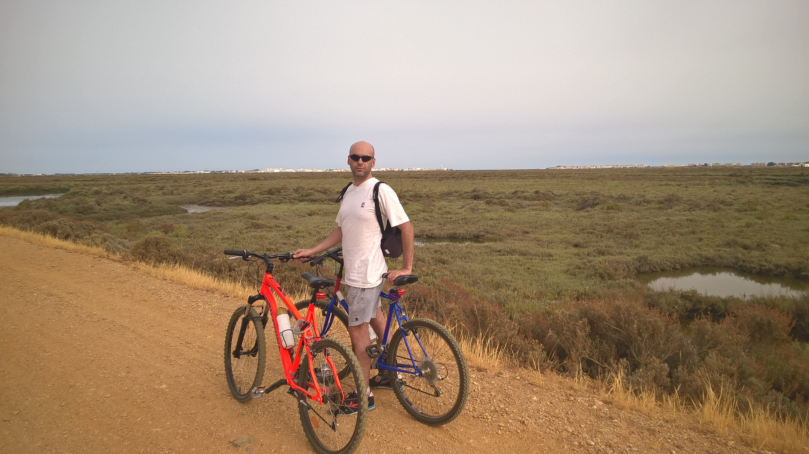

<!-- Sección Sobre mi -->
<div class="section-modal modal fade" id="sobremi-modal" tabindex="-1" role="dialog" aria-hidden="true">
    <div class="modal-content">
        <div class="close-modal" data-dismiss="modal">
            <div class="lr">
                <div class="rl">
                </div>
            </div>
        </div>
        <div class="container">
            <div class="row">
                <div class="section-title text-center">
                    <h3>Sobre mi</h3>
                    <p>Unas palabras sobre mi.</p>
                </div>
            </div>
            <div class="row">
                <div class="col-md-12">
                    <div class="about-text">
                        <p>
                        Me apasionan las nuevas tecnologías y en especial la informática. No solamente la parte de hardware, en la que he trabajado muchos años, 
                        también en la parte de software, desarrollando aplicaciones. Es una disciplina en evolución constante, donde cada año tenemos nuevos componentes 
                        de hardware, nuevos lenguajes de programación, nuevos frameworks, nuevos entornos de desarrollo, etc. Debes estar constantemente actualizándote, 
                        estudiando nuevos sistemas, en formación constante, si pretendes estar al día. Es lo que más me motiva, trabajar y estudiar una disciplina que 
                        está en constante renovación.
                        </p>
                        <p>
                        Trabajo en proyectos relacionados con mis estudios y mi experiencia laboral, ya que es ese ámbito en el que puedo explotar todo mi potencial, 
                        aparte de ser mi mayor pasión.
                        </p>
                        <p>
                        Soy capaz de trabajar individualmente y en equipo. Trabajando individualmente soy capaz de estructurar un plan de ejecución, organizarme los 
                        tiempos, y avanzar en el trabajo según dicha planificación. Aun así, si en algún momento surgiera algún problema, puedo adaptar a una nueva 
                        estructura, corregir el problema, o pedir ayuda si fuera necesario. Trabajando en equipo no tengo problema de integración ni adaptación. 
                        Realizaría la parte del trabajo que me correspondiera, siempre en contacto con los demás miembros para avanzar en el proyecto al unísono. 
                        En el caso de proponerme liderar el equipo de trabajo, soy plenamente capaz de organizar al equipo, repartir el trabajo en función de las 
                        competencias de cada miembro, motivar al equipo para conseguir terminar el proyecto en el plazo previsto y apoyar a los miembros del equipo 
                        que tuvieran problemas.
                        </p>
                        <p>
                        En cuanto a mi persona, podría destacar algunas virtudes y, por qué no, defectos también:
                        </p>
                        <div class="row">
                            <div class="col-md-3 col-sm-6 col-md-offset-3">                                      
                                <ul>
                                    <li><i class="fa fa-check-square"></i>Soy profesional.</li>
                                    <li><i class="fa fa-check-square"></i>Muy activo.</li>
                                    <li><i class="fa fa-check-square"></i>Con iniciativa.</li>
                                </ul>
                            </div>
                            <div class="col-md-3 col-sm-6" style="justify-content: flex-start">                                       
                                <ul>
                                    <li><i class="fa fa-check-square-o"></i>Demasiado perfeccionista.</li>
                                    <li><i class="fa fa-check-square-o"></i>Algo inconformista.</li>
                                    <li><i class="fa fa-check-square-o"></i>Muy exigente.</li>
                                </ul>
                            </div>
                        </div>
                    </div>
                </div>
            </div>    
            <!-- Inicio Carousel --> 
            <div class="row">                                      
                <div class="home-slider col-md-12">
                    <div id="carousel-example-generic" class="carousel slide" data-ride="carousel" style="padding-bottom: 30px;">
                        <ol class="carousel-indicators">
                            <li data-target="#carousel-example-generic" data-slide-to="0" class="active"></li>
                            <li data-target="#carousel-example-generic" data-slide-to="1"></li>
                            <li data-target="#carousel-example-generic" data-slide-to="2"></li>
                        </ol>
                        <div class="carousel-inner">
                            <div class="item active">
                                
                            </div>
                            <div class="item">
                                
                            </div>
                            <div class="item">
                                
                            </div>
                        </div>
                    </div>
                </div>                  
            </div>
            <!-- Final Carousel -->                                     
        </div>              
    </div>
</div>
<!-- Sección Sobre mi -->